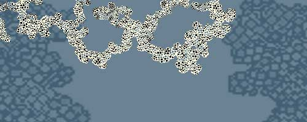
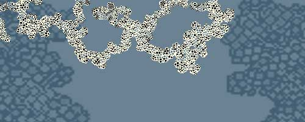

|
Sheila Malone: I'm sure everyone's dying to know how you consider the "glow in the dark" bunny art?
Eduardo Kac: I don't consider her a work of art. She's part of the artwork and at this point so are we. I'm not inventing art as a social event. This is something that has evolved throughout the twentieth century from the moment artists started to break away from focusing their activity on the creation of self-contained objects. The work becomes more about different kinds of relationships through the work, with the work, around the work.
SM: Can you talk about your ideas about this dialogic perspective?
EK: This is equivalent to the question people ask me, "so where's your studio?" Well, I don't have one per se. The way I work, the way I produce the work is very simple. The way the work gets experienced is distributed. I work with different people often in different parts of the world, sometimes I have to fly, we meet each other, depending on what the project is, it comes together in a particular way. There's always this network of actions and images of people and relationships between people.
SM: So collaboration is key?
EK: Collaboration is a loaded term. There are different modes in which you can work with other people. You can collaborate and it's a shared authorship. That's one thing. You can collaborate in the sense that it's your work, it's your idea, it's your concept, your vision, your initiative, but the thing that you're stating is that you remain in full control of every aspect of the work, by saying that, you're not saying that the work has closure or is finite. We can learn something from chaos theory there: about sensitive dependence on initial conditions. The initial conditions that the work is sensitive to is the impetus, the initiative of the artist who set something in motion. It's a different model all together for the role of the artist. That's how I often work. I set something in motion. It's less like the film director and more like coordinator.
SM: What did you learn through the process of working with transgenic art, or better yet with Alba the bunny?
EK: The process was very complicated and is still going on. We're still discovering different nuances. I'm also trying to develop other ways of persuading the French Institute to let her(Alba) come to my family in Chicago. I learned several things. Let me narrate briefly how this process developed and what my expectations were. I did not have access to the Institute. I gained access through a very particular context. There was this festival in France, in Avignon. And Louis Bec, who is an artist, cultural producer and promoter, was very much involved throughout the eighties with what became known as Artificial Life, but his own brand of Artificial Life. He called it Fabulatory Epistemology. He develops this very complex taxonomy of invented creatures that are in every way scientific. The scientific papers that he writes are scientific in every aspect except for the fact that these creatures don't exist. So, Louis Bec invited me to participate in his Festival. So, when I proposed this project, he knew exactly what this was about, considering his work I just described. He understood the French system and he managed this communication between myself and the French scientists. On the one hand this is what made it possible and on the other hand is part of the difficulty in the communication because out of respect for his role it made no sense for me to bypass him, it was after all that which made it possible. It was this rhythm, this dance and Louis Bec does not speak English. My French is okay, it's fine but you also have some linguistic issues there. Everything took awhile, long pauses, long silences. Long breaks in communication, then intense moments of communication. It worked. With the scientists, everything was straightforward. We understood what they wanted, they understood what we wanted. They agreed Alba would come to me. Our lawyers and their lawyers were talking, everything was fine, then one day before I was ready to go to Avignon, I got an email from the director of the Institute saying they would not let Alba come to Avignon. And I didn't understand the email, I mean what director is this? This person wasn't involved in this conversation at all. It became clear that it was censorship and then Louis Bec started to send emails to his European colleagues, denouncing the censorship. The local media in the South of France picked it up, which obviously had no resonance.
SM: Censorship? Because of an artist being involved in such a process?
EK: I can only speculate. There is what he said and then there is what he actually thought. I identified the gap because what he said had no correspondance to reality. He said that we did not have the ideal conditions to present Alba in Avignon. That was the statement. This is not true because, first of all, he never told us what these conditions were, and second, never gave us the opportunity to create them. It was just a unilateral, univocal, monologic statement: this is it, you don't have the conditions, she's not going. There was no dialogue. If I speculate, he was probably concerned with the public's perception of the relationship behind the science and that art is playful, is mindless, is not serious, and science is objective, serious, importanat for society etc..
Which is not how I see it. He had the power, he basically imposed a situation. Then he left, summer in France, where everything stops, vacation time, everything comes to a complete halt, and then a new director came in around the time the Boston Globe story came out, which got picked up by every major media organization around the world. Then you had this tremendous feedback mechanism, I started the Alba guest book as an outlet where this feedback could be concentrated and then redistributed, for further feedback situations.
I've been working with telematics since 1985, and with new media since 1983, and with multimedia since 1980. And in this non-electronic artwork I created the largest consensual domain, to use Maturana's terminology, or the largest feedback sphere, larger than any other work I've created, reaching billions of people-literally. It's been an amazing process in the sense that I'm trusted in this position of educator, which of course I am at the Art Institute, but when I'm at the Art Institute I'm dealing with a very specific audience there that is focused on this learning experience. But when you're speaking on radio or television or to media that is not specialized and you're dealing with complex ideas in a medium that can only accommodate sound bytes and nothing else, to be able to move between these modes of discourse and still get a point across and still be able to engage other audiences, is in itself a learning experience. There were many aspects to the process.
SM: Why do you want the bunny in your family?
EK: Several reasons. One is responsibility. If you're dealing with an animal that clearly has consciousness, you could argue about consciousness regarding a lot of other life forms-that's not our purpose here-although I've done that and I'm interested in that, which was my intention- I could have worked with flys or worms or mice, but my point was exactly to think of the transgenic animal as a social subject not as an object of anything. I couldn't really work with cats because the whole family is allergic to cats (ironically my last name is Kac-pronounced "katz"). Mice are very fragile. They are very frightened creatures. So, you couldn't really engage on a daily basis. Rats are more socially oriented. They are more friendly. During the punk movement the punks had rats as pets. But being a project that has to do with domesticity and obviously I can't really impose anything, and my wife would never accept a rodent as a member of the family. I really wanted to work with an image that would be clearly recognizeable, not lining it up with punk strategies, but clearly recognizably ordinary established domestic animal. That's the image, the issue, I want to talk about how something that is perceived by the public to be very esoteric is in fact becoming part of your domestic space. Dog-yeah- it was my initial proposition from '98 to create GFP canine which I would still like to do. And I'm working on that but somewhat slowly, because my main focus right now is trying to free Alba.
|

 
